{kind=link}
◆「職階別Pick Up召喚」期間◆
期間：2016年9月21日(三) 16:00～9月28日(三) 12:59
以期間限定舉辦「職階別Pick Up召喚」！
職階別Pick Up召喚是以每日交替只會召喚到的對象職階Servant，職階確定召喚。
詳情請在聖晶石召喚畫面左下的召喚詳細確認。
10次召喚中★4(SR)以上1張確定和★3(R)以上的Servant1位確定！
※★4(SR)以上確定包含Servant和概念禮裝。
※所謂「出現機率UP」意指比同稀有度的Servant及概念禮裝出現機率更高的設定。
| Pick Up日 | 每日交替時間表 |
|---|---|
| 9月21日(三)16:00～22:59 | Saber |
| 9月21日(三)23:00～9月22日(四)22:59 | Archer |
| 9月22日(四)23:00～9月23日(五)22:59 | Lancer |
| 9月23日(五)23:00～9月24日(六)22:59 | Rider |
| 9月24日(六)23:00～9月25日(日)22:59 | Assassin+EXTRA |
| 9月25日(日)23:00～9月26日(一)22:59 | Caster |
| 9月26日(一)23:00～9月27日(二)22:59 | Berserker |
| 9月27日(二)23:00～9月28日(三)12:59 | Saber |
※請注意每日交替會變更Pick Up的Servant
◆Saber職階召喚對象Servant◆
| 稀有度 | 名稱 |
|---|---|
| ★★★★★ | 阿爾托莉亞・潘德拉剛 |
| ★★★★★ | 阿提拉 |
| ★★★★★ | 莫德雷德 |
| ★★★★ | 阿爾托莉亞・潘德拉剛〔Alter〕 |
| ★★★★ | 尼祿・克勞狄烏斯 |
| ★★★★ | 齊格飛 |
| ★★★★ | 夏爾・德翁 |
| ★★★★ | 羅摩 |
| ★★★★ | 蘭斯洛特 |
| ★★★★ | 高文 |
| ★★★ | 蓋烏斯・尤利烏斯・凱撒 |
| ★★★ | 吉爾・德・雷 |
| ★★★ | 弗格斯・馬克・羅伊 |
※Pick Up期間中，阿爾托莉亞・潘德拉剛〔Alter〕(Saber)、尼祿・克勞狄烏斯、高文就算在各章通過前也可以入手。
◆Archer職階召喚對象Servant◆
| 稀有度 | 名稱 |
|---|---|
| ★★★★★ | 俄里翁 |
| ★★★★★ | 阿周那 |
| ★★★★★ | 尼古拉・特斯拉 |
| ★★★★ | Emiya |
| ★★★★ | 阿塔蘭塔 |
| ★★★★ | 崔斯坦 |
| ★★★ | 羅賓漢 |
| ★★★ | 尤瑞艾莉 |
| ★★★ | 大衛 |
| ★★★ | 子吉爾 |
| ★★★ | 比利小子 |
| ★★★ | 俵藤太 |
※Pick Up期間中，尼古拉・特斯拉、崔斯坦就算在各章通過前也可以入手。
◆Lancer職階召喚對象Servant◆
| 稀有度 | 名稱 |
|---|---|
| ★★★★★ | 迦爾納 |
| ★★★★★ | 阿爾托莉亞・潘德拉剛 |
| ★★★★ | 伊莉莎白・巴托里 |
| ★★★★ | 阿爾托莉亞・潘德拉剛〔Alter〕 |
| ★★★★ | 芬恩・麥克庫爾 |
| ★★★★ | 李書文 |
| ★★★ | 庫・夫林 |
| ★★★ | 庫・夫林〔Prototype〕 |
| ★★★ | 羅慕路斯 |
| ★★★ | 赫克特 |
| ★★★ | 迪爾姆德・奧德利暗 |
※Pick Up期間中，阿爾托莉亞・潘德拉剛〔Alter〕(Lancer)、阿爾托莉亞・潘德拉剛(Lancer)、李書文就算在各章通過前也可以入手。
◆Rider職階召喚對象Servant◆
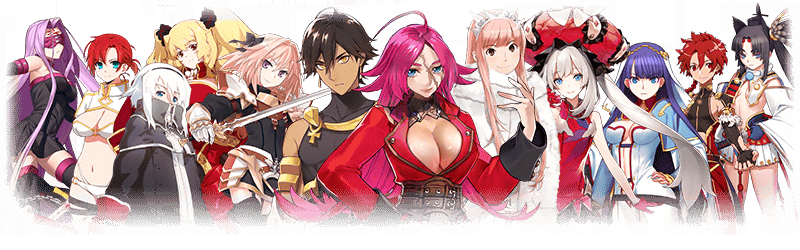
| 稀有度 | 名稱 |
|---|---|
| ★★★★★ | 弗朗西斯・德雷克 |
| ★★★★★ | 女王梅芙 |
| ★★★★★ | 奧茲曼迪亞斯 |
| ★★★★ | 瑪莉・安東尼 |
| ★★★★ | 瑪爾大 |
| ★★★★ | 安妮・伯妮＆瑪莉・瑞德 |
| ★★★★ | 阿斯托爾福 |
| ★★★ | 美杜莎 |
| ★★★ | 布狄卡 |
| ★★★ | 牛若丸 |
| ★★★ | 亞歷山大 |
※Pick Up期間中，女王梅芙就算在各章通過前也可以入手。
◆Assassin+EXTRA職階召喚對象Servant◆
| 稀有度 | 名稱 |
|---|---|
| ★★★★★ | 開膛手傑克 |
| ★★★★★ | 貞德 |
| ★★★★ | 絲西娜 |
| ★★★★ | 卡米拉 |
| ★★★★ | Emiya〔Assassin〕 |
| ★★★ | 荊軻 |
| ★★★ | 亨利・傑基爾＆海德 |
| ★★★ | 百貌的哈桑 |
| ★★★ | 風魔小太郎 |
| ★★★ | 靜謐的哈桑 |
◆Caster職階召喚對象Servant◆
| 稀有度 | 名稱 |
|---|---|
| ★★★★★ | 諸葛孔明〔埃爾梅羅II世〕 |
| ★★★★★ | 玉藻前 |
| ★★★★★ | 玄奘三藏 |
| ★★★★ | 美狄亞〔Lily〕 |
| ★★★★ | 童謠 |
| ★★★★ | 海倫娜・布拉瓦茨基 |
| ★★★★ | 湯瑪斯・愛迪生 |
| ★★★★ | 尼托克里絲 |
| ★★★ | 梅菲斯托費勒斯 |
| ★★★ | 美狄亞 |
| ★★★ | 庫・夫林 |
| ★★★ | 吉爾・德・雷 |
| ★★★ | 馮・霍恩海姆・帕拉塞爾斯 |
| ★★★ | 查爾斯・巴貝奇 |
| ★★★ | 傑羅尼莫 |
※Pick Up期間中，庫・夫林(Caster)、吉爾・德・雷(Caster)、美狄亞〔Lily〕、湯瑪斯・愛迪生就算在各章通過前也可以入手。
◆Berserker職階召喚對象Servant◆
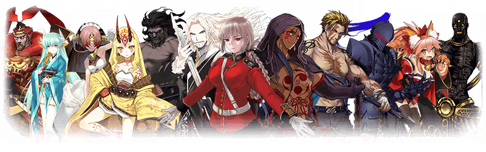
| 稀有度 | 名稱 |
|---|---|
| ★★★★★ | 弗拉德三世 |
| ★★★★★ | 南丁格爾 |
| ★★★★★ | 庫・夫林〔Alter〕 |
| ★★★★ | 海克力斯 |
| ★★★★ | 玉藻貓 |
| ★★★★ | 蘭斯洛特 |
| ★★★★ | 弗蘭肯斯坦 |
| ★★★★ | 貝奧武夫 |
| ★★★★ | 茨木童子 |
| ★★★ | 呂布奉先 |
| ★★★ | 大流士三世 |
| ★★★ | 清姬 |
※Pick Up期間中，庫・夫林〔Alter〕就算在各章通過前也可以入手。


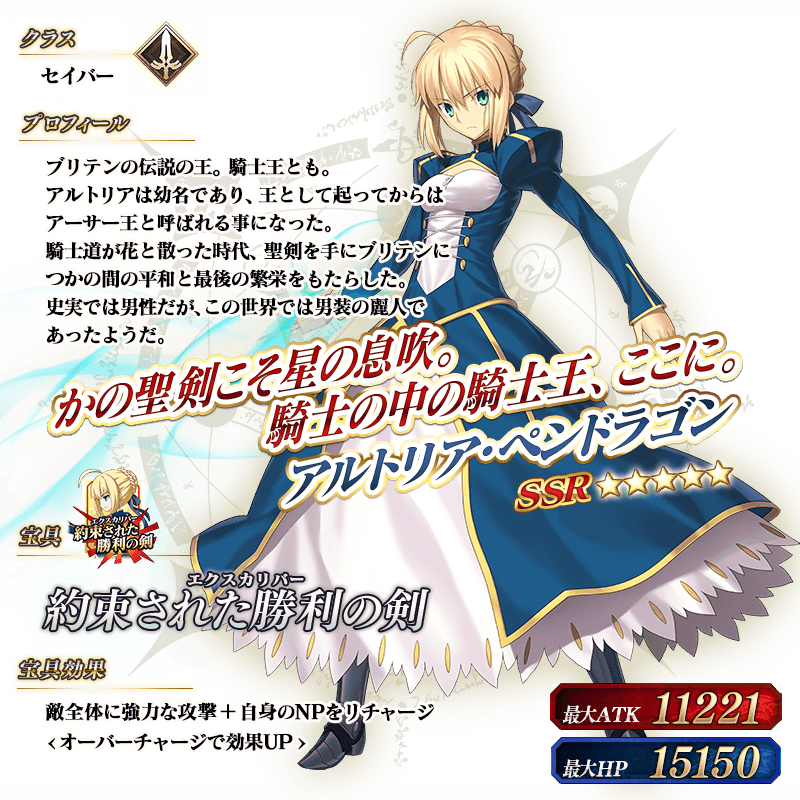
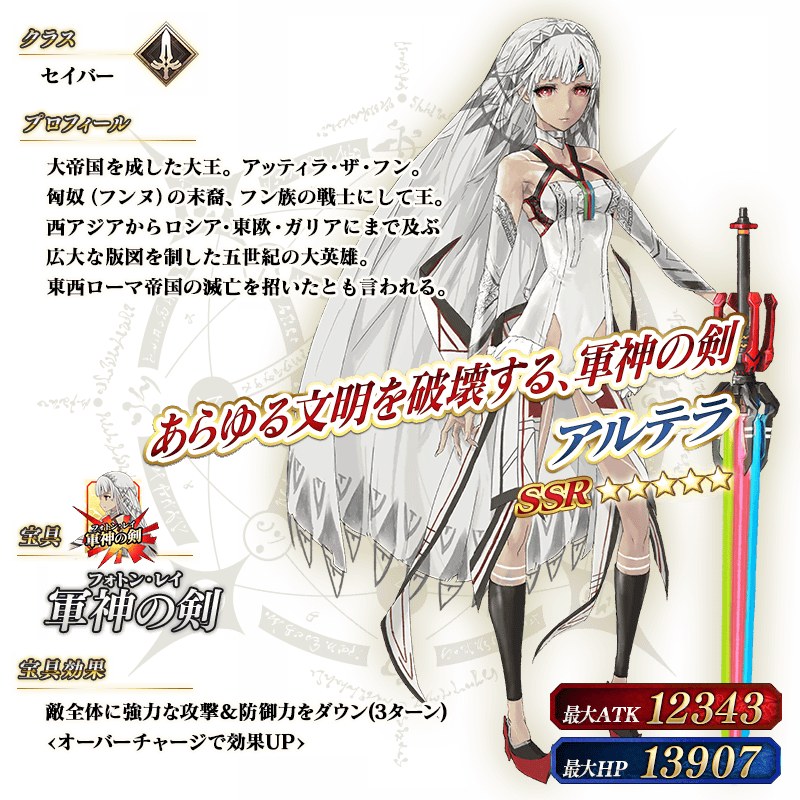
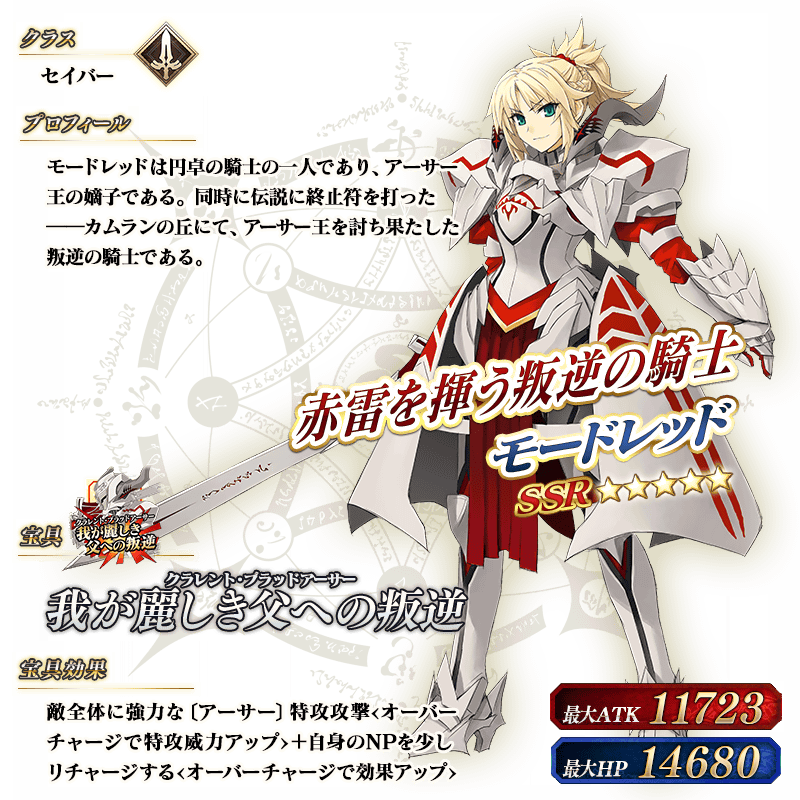

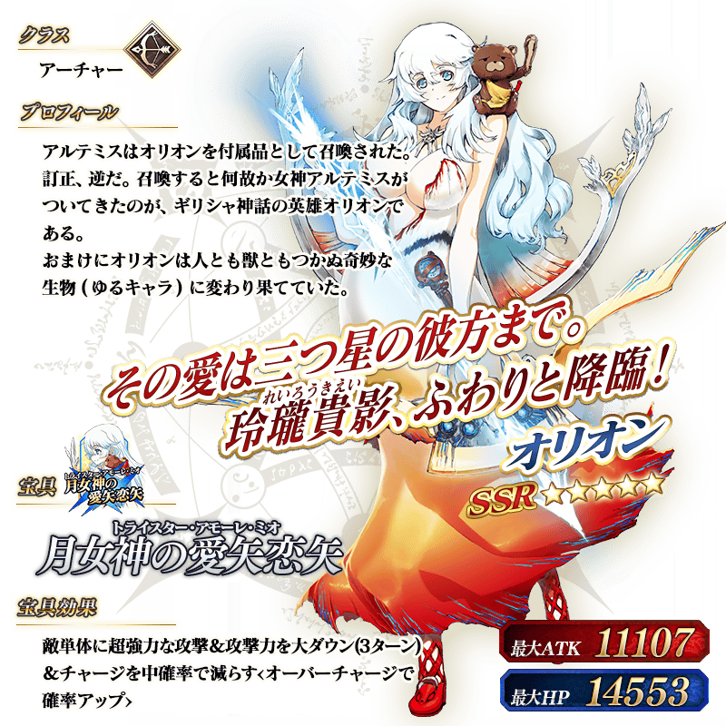
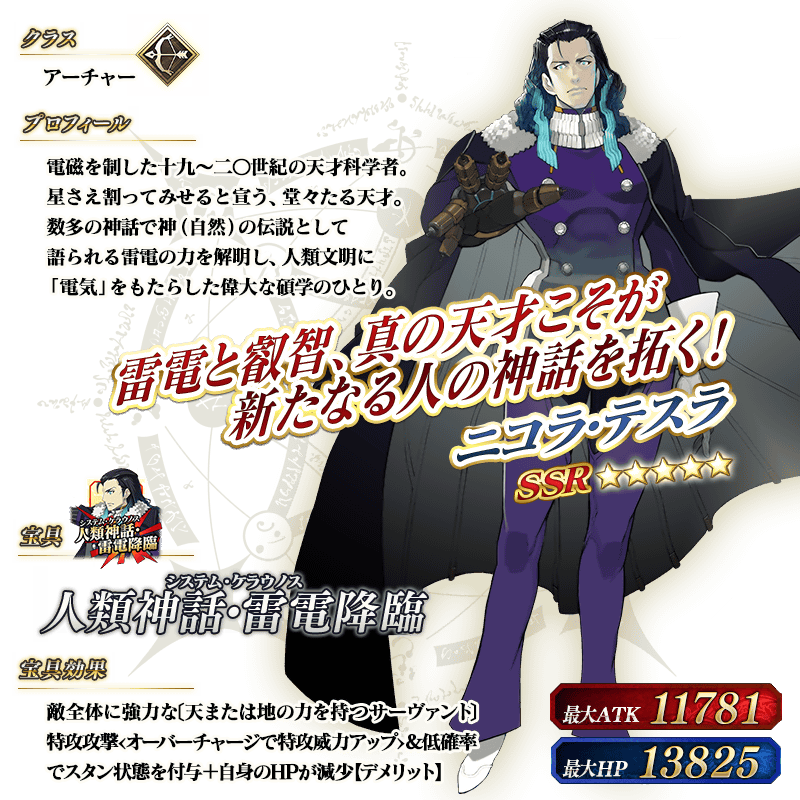


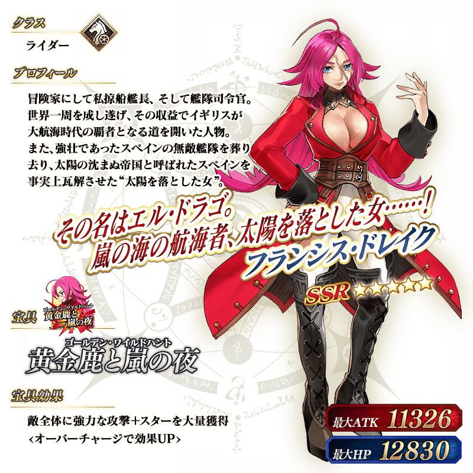
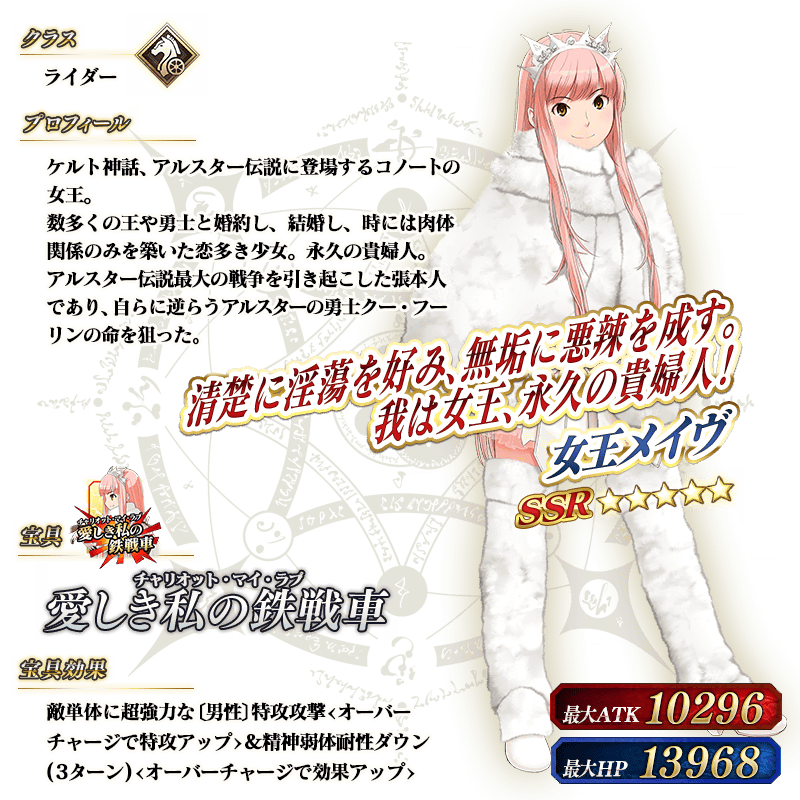


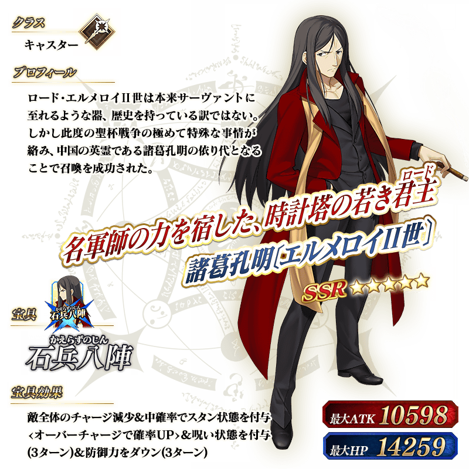
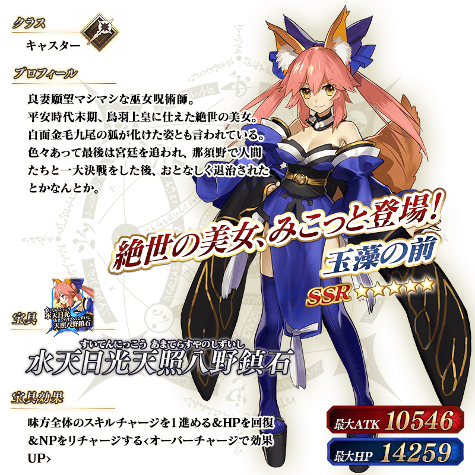
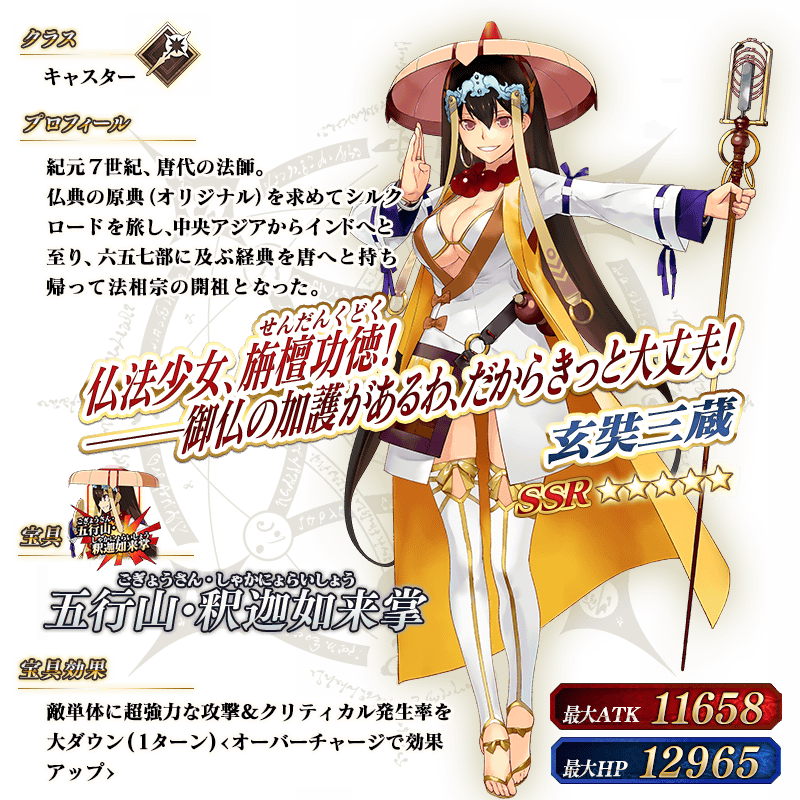

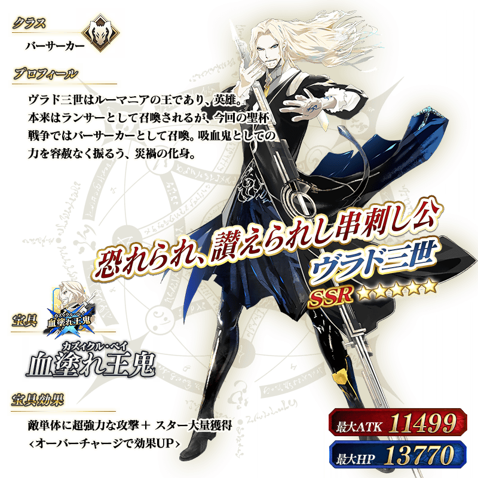